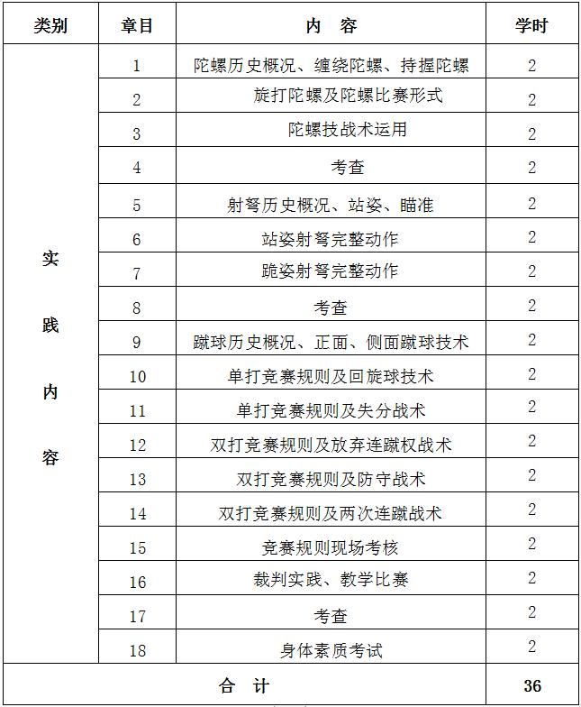
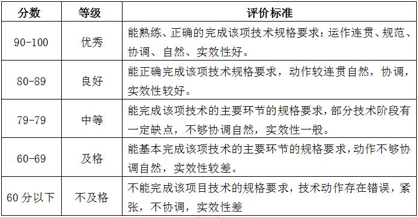

课程管理
|
课程名称 |
公共体育--少数民族传统体育（II） |
课程代码 |
TX031113 |
|
课程类型 |
√通识课 □学科（专业）基础课 □专业发展课 |
课程性质 |
√必修课 □选修课 |
|
开课单位 |
体育学院 |
适用专业 |
非体育专业 |
|
总学时数 |
36 |
周学时数 |
2 |
|
课程学分 |
1 |
编 写 人 |
汪明海 |
|
编写时间 |
2017.07.20 |
审 批 人 |
刘其龙 |
一、教学目的
（一）通过本课程的学习，传承优秀少数民族体育文化，弘扬民族传统精神， 增强民族认同感，树立民族传统文化的科学发展观。
（二）通过本课程教学，使学生初步掌握我国优秀少数民族传统项目珍珠球、抢花炮两个项目的基本原理、基本技战术，通过教学和实践，提高学生的力量、耐力、协调、灵敏等身体素质，达到强身健体的目的。培养学生的锻炼兴趣和习惯，培养学生吃苦耐劳的意志品质和团结协作精神， 增进对少数民族传统体育的认识和了解，提高对少数民族传统体育文化传承的实践能力。
二、重点与难点
（一）旋打陀螺技术。
（二）射弩准备和击发动作的协调配合。
（三）蹴球竞赛规则的掌握与技战术的灵活运用。
三、基本内容与要求
第1章 陀螺历史概况、缠绕陀螺、持握陀螺
1.1 陀螺的概况、运动特点
1.2 缠绕陀螺、持握陀螺技术
第2章 旋打陀螺及陀螺比赛形式
2.1 复习缠绕陀螺、持握陀螺技术
2.2 学习旋打陀螺及陀螺比赛形式
第3章 陀螺技战术运用
3.1 复习旋打陀螺及陀螺比赛形式
3.2 学习陀螺技战术运用
第4章 陀螺考查
第5章 射弩历史概况、站姿、瞄准
5.1 射弩历史概况、运动特点
5.2 学习站姿、瞄准
第6章 站姿射弩完整动作
6.1 复习站姿、瞄准
6.2 学习站姿射弩完整动作
第7章 跪姿射弩完整动作
7.1 复习站姿射弩完整动作
7.2 学习跪姿射弩完整动作
第8章 射弩考查
第9章 蹴球历史概况、正面、侧面蹴球技术
9.1 蹴球历史概况、运动特点
9.2 正面、侧面蹴球技术
第10章 单打竞赛规则及回旋球技术
10.1 单打竞赛规则讲解
10.2 学习回旋球技术
第11章 单打竞赛规则及失分战术
11.1 单打竞赛规则讲解
11.2 学习失分战术
第12章 双打竞赛规则及放弃连蹴权战术
12.1 学习双打竞赛规则
12.2 学习放弃连蹴权战术
第13章 双打竞赛规则及防守战术
13.1 学习双打竞赛规则
13.2 学习防守战术
第14章 双打竞赛规则及两次连蹴战术
14.1 学习双打竞赛规则
14.2 学习两次连蹴战术
第15章 竞赛规则现场考核
第16章 裁判实践、教学比赛
16.1 组织学生进行裁判实践
16.2 教学比赛
第17章 考查
第18章 身体素质考试
四、授课内容学时分配
五、考核方式：
（一）考核方式：现场测试。
根据教学目的和要求，本课程的考核在学期末进行，考核内容结合本学期教学内容进行。综合成绩＝平时成绩×30%＋考试成绩×70%，其中平时成绩根据考勤、课堂表现进行评分，考试成绩＝技能考核成绩×70%＋身体素质成绩×30%， 专项成绩＝陀螺成绩×40%＋射弩成绩×40%＋蹴球成绩×20%。身体素质为每学期的必考项目，考试内容为1000米。
（二）考试内容：陀螺考查采取打准、射弩考查采取射准、蹴球双打实战、身体素质（男子1000米）。
（三）评分标准 ：
1.陀螺评分标准：每打中5米外的目标陀得10分，共打10陀，计算总分。
2.射弩评分标准：15米站姿，射10支箭，以靶面实际环数计算得分。
3.蹴球评分标准：
4.身体素质（男子1000米）：评分标准见表1。
六、教材与参考书目
（一）使用教材：
[1]方哲红.民族传统体育教学与训练（浙江省“十一五”重点教材建设项目）.北京体育大学出版社.2009.12.
[2]国家体育总局群众体育司.少数民族传统体育项目竞赛和表演规则及裁判法.广州：广东人民出版社.2007.03.
（二）参考书目：
[1]周伟良主编.中国民族传统体育概论高级教程.高等教育出版社出版，2003.11.
[2]白晋湘.民族传统体育教程.中南工业大学出版社，2001.06.
[3]刘德琼主编.少数民族传统体育.广西师大出版社出版,2000.05.
表1 身体素质考核评分标准

注：数据来源于国家学生体质健康标准（2014年修订）。